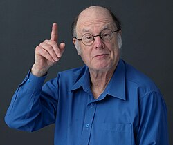

This article needs more citations. (March 2026) |
Charles H. Bennett | |
|---|---|
 | |
| Born | Charles Henry Bennett 1943 (age 82–83) New York City, New York, U.S. |
| Education | |
| Known for | |
| Awards |
|
| Scientific career | |
| Fields | |
| Institutions | Thomas J. Watson Research Center |
| Website | researcher.watson.ibm.com |
{kind=link}
Charles Henry Bennett (born 1943[1]) is an American physicist, information theorist and IBM Fellow at IBM Research. Bennett's recent work at IBM has concentrated on a re-examination of the physical basis of information, applying quantum physics to the problems surrounding information exchange. He has played a major role in elucidating the interconnections between physics and information, particularly in the realm of quantum computation, but also in cellular automata[2] and reversible computing.
He co-developed the first practical quantum cryptography protocol (BB84) with Gilles Brassard and is one of the founding fathers of modern quantum information theory (see Bennett's four laws of quantum information). He shared the 2025 Turing Award with Brassard for their work in quantum information science.
Early career
Born in 1943 in New York City, Bennett earned a BS in chemistry from Brandeis University in 1964 and received his PhD from Harvard in 1970 for molecular-dynamics studies (computer simulation of molecular motion) under David Turnbull and Berni Alder. At Harvard, he also worked for James Watson one year as a teaching assistant about the genetic code. For the next two years he continued this research under Aneesur Rahman at Argonne National Laboratory (operated by the University of Chicago).
After joining IBM Research in 1972, he built on the work of IBM's Rolf Landauer to show that general-purpose computation can be performed by a logically and thermodynamically reversible apparatus; and in 1982 he proposed a re-interpretation of Maxwell's demon, attributing its inability to break the second law to the thermodynamic cost of destroying, rather than acquiring, information.[3] He also published an important paper on the estimation of free-energy differences between two systems, the Bennett acceptance ratio method.
Quantum cryptography
In collaboration with Gilles Brassard of the Université de Montréal, Bennett developed a system of quantum cryptography, building on an idea of Stephen Wiesner. Known as BB84, the system takes advantage of the uncertainty principle to allow secure communication between parties who share no secret information initially. With the help of John Smolin, he built the world's first working demonstration of quantum cryptography in 1989.
His other research interests include algorithmic information theory, in which the concepts of information and randomness are developed in terms of the input/output relation of universal computers, and the analogous use of universal computers to define the intrinsic complexity or "logical depth" of a physical state as the time required by a universal computer to simulate the evolution of the state from a random initial state.
Teleportation
In 1993 Bennett and Brassard, in collaboration with others, discovered "quantum teleportation", an effect in which the complete information in an unknown quantum state is decomposed into purely classical information and purely non-classical Einstein–Podolsky–Rosen (EPR paradox) correlations, sent through two separate channels, and later reassembled in a new location to produce an exact replica of the original quantum state that was destroyed in the sending process.
Later work
In 1995–1997, working with Smolin, Wootters, DiVincenzo, and other collaborators, he introduced several techniques for faithful transmission of classical and quantum information through noisy channels, part of the larger field of quantum information and computation theory. Together with others he also introduced the concept of entanglement distillation.
Bennett is a Fellow of the American Physical Society and a member of the National Academy of Sciences. He was awarded the 2008 Harvey Prize by the Technion[4] and the 2006 Rank Prize in opto-electronics. In 2017 he received the Dirac Medal of the ICTP and in 2018 the Wolf Prize in Physics.[5] In June 2019, he received the Shannon Award and for 2019 the BBVA Foundation Frontiers of Knowledge Award in Basic Sciences.[6] In 2023 he was awarded the Breakthrough Prize in Fundamental Physics[7] and also in 2023 the Eduard Rhein Foundation Prize in Technology.[8]
Bennett also co-runs a blog, The Quantum Pontiff, with Steve Flammia and Aram Harrow and hosted by Dave Bacon.
In March 2026, Bennett was named, along with Gilles Brassard, as recipient of the 2025 ACM Turing Award, for work on the foundations of quantum information science and secure communication and computing.[9]
Private life
Bennett identifies himself as an atheist. Recalling a fond memory of the physicist Asher Peres, he writes:[10]
[Asher] often pretended to consult me, a fellow atheist, on matters of religious protocol. As we waited in line to eat the hors d'oeuvres at a conference in Evanston, he said, "There is a prayer Jews traditionally say when they do something new that they have never done before. I am about to eat a new kind of non-Kosher food. Do you think I should say the prayer?"
References
- ^ "Charles H. Bennett biography". July 25, 2016.
- ^ Charles H. Bennett Bibliography.
- ^ Bennett, C. H. (1982). "The thermodynamics of computation—a review". International Journal of Theoretical Physics. 21 (12): 905–940. Bibcode:1982IJTP...21..905B. CiteSeerX 10.1.1.655.5610. doi:10.1007/BF02084158. S2CID 17471991.
{{cite journal}}: Cite uses deprecated parameter|citeseerx=(help) - ^ LIST OF HARVEY PRIZE WINNERS Archived October 30, 2008, at the Wayback Machine
- ^ Wolf Prize 2018
- ^ BBVA Foundation Frontiers of Knowledge Award
- ^ Breakthrough Prize in Fundamental Physics 2023
- ^ Eduard Rhein Foundation Prize 2023
- ^ "A.M. Turing Award Winners". acm.org. Retrieved March 18, 2026.
- ^ Charles H. Bennett's letter written to the family of Israeli physicist Asher Peres, from a selection of the many letters of condolence sent to the Peres family during January 2005.